R155 联合国车辆安全法规UR R155
R155白皮书（英文版） https://unece.org/sites/default/files/2021-03/R155e.pdf
什么是UN R155规范？
联合国车辆安全法规UR R155是联合国欧洲经济委员会（UNECE）可持续交通系统部门的工作组，即「世界车辆法规协调论坛」的简称。WP.29将技术的演进与监管构架整合，以便制造更安全、更环保的车辆。其工作的一部分，就是在2021年1月实施了联合国155号规范（UN R155）。 UN R155规范要求车辆需配备网络安全管理系统（CSMS）。简而言之，CSMS确保网络安全作法和措施已充分应用在车辆的开发过程和生命周期中。
它带来的影响是什么？
UNECE WP.29的监管构架适用于其54个成员国，包括欧盟、英国、日本和韩国。此外，某些地区和国家可能要求制造商必须遵守UN R155和其他WP.29法规，才能合法进入其市场。 虽然UN R155规范是针对制造商，但很明显也会影响到上游的供应链，因为在车辆的开发、制造和制造后的阶段，都需要CSMS。 WP.29的UN R155可被视为迈出的积极一步，因为它可以帮助汽车制造商、代工厂商和其他利益相关者建立一个更安全的联网汽车生态系统，并为进一步发展和潜在的改变预留空间。
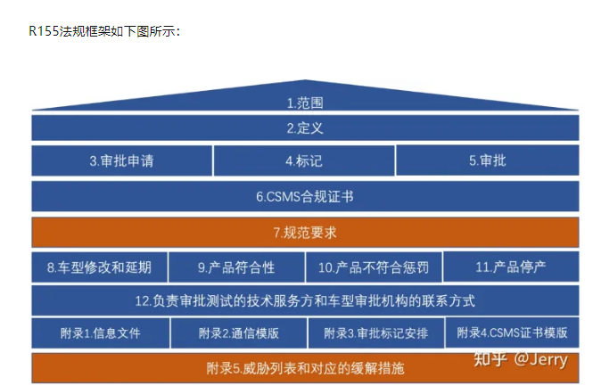
R155法规时间规划
• 2021年1月22日法案正式生效，开放申请CSMS（Cyber Security Management System/网络安全管理体系认证）证书、VTA（Vehicle Type Approval/车辆型式认证）证书；
• 2022年7月起适用于新车型；2024年7月起适用于所有车型；
• 2022年-2024年两年内的现有架构新车型上市，若无法按照CSMS开发，则VTA必须证明在开发阶段已充分考虑网络安全；
• 2025年1月过渡期结束，要求所有架构所有车型通过认证（CSMS+VTA）。
要如何符合UN R155规范？
UN R155订出了一般和针对特定目标的要求，评价车辆是否配备CSMS及其是否充分实践网络安全。该规范对制造商的主要挑战来自于制造商必需对风险进行全面评价，并辨识及应对在整个车辆生命周期中的网络攻击。 为此，UN R155附件5列出了69个攻击途径或风险，并订出制造商为保护其车辆而必须考虑的重点领域。这些重点领域包括：
- -后端服务器。与后端服务器相关的威胁，其例包括员工滥用权限和未经授权的网络存取服务器。
- -通信管道。这些威胁涉及汽车的内部通信管道，包括假信息、注入代码和拦截信息。
- -更新流程。从车辆更新流程而来或与其相关的风险，包括在更新过程之前操纵软件，以及会阻止执行更新的阻断服务（DoS）攻击。
- -人为错误。这个重点领域在于人为相关的风险，例如不遵守规定的安全程序和落入启动网络攻击的陷井。
- -外部链接。外部链接风险，与车辆如何与其外部环境交流和通信有关。这些通常涉及针对车辆感应器、外部界面和远端功能的攻击。
- -数据/代码。与数据/代码相关的威胁会影响车辆储存、收集和使用的数据和信息。例子包括未经授权存取车主的个人信息、伪造车辆数据以及引入恶意软件。
- -充分补强漏洞。这个重点领域涉及可利用的漏洞，当保护措施不足以保护系统免受漏洞攻击时。此类风险与加密技术、硬件和软件的破坏有关。
哪些车辆类型应符合UN R155规范？
UN R155规范适用于以下UNECE类别和条件，包含乘用车、货车、卡车、公共汽车和某些小型四轮车：
- - M/N类别：至少有四个轮子的车辆
- - O类别：配备至少一个电子控制单元（ECU）的联结车
- - L6/L7类别：配备Level 3或以上自动驾驶的小型四轮车
哪些国家加入了UN R155规范？
UN R155规范适用于加入1958年UNECE运输协定及公约的54个成员国，包括欧盟、英国、日本和韩国。但不属于上述54国的国家，若计划向这些成员国出售产品，仍应考虑该法规的影响。
UN R155规范对制造商及其供应商有何影响？
根据规范，制造商必须证明在车辆的整个生命周期中贯彻网络安全方法和流程，包括开发、制造和制造后阶段。符合法规要求的制造商将获得核准类别，可以在采用该法规的国家销售其车辆，并能将公司打造成对客户来说可靠的品牌。虽然一阶和二阶供应商不需要获得自己的合规核准，但仍必须向制造商证明已实施所有网络安全要求。
UN R155规范如何影响已经上路的车辆？
在UN R155规范执行之前已有的车辆和批准类型不受其影响。
UN R155规范对汽车网络安全要求是什么？
UN R155规范的内容主要针对取得CSMS和车辆批准类别的要求。制造商应采用经过认证的CSMS，以保护其车辆在整个生命周期内，免受网络安全威胁和漏洞的影响。关于车辆批准类别，制造商应证明其在架构设计、风险评估和网络安全控制领域实施了网络安全措施。请参阅（https://unece.org/fileadmin/DAM/trans/doc/2020/un-r155grva/ECE-TRANS-WP29-2020-079-Revised.pdf）了解最新资讯。
UN R155规范与ISO/SAE 21434标准有何关系？
UN R155规范和ISO/SAE 21434都包含了对车辆整个生命周期的网络安全风险管理的要求。如果制造商及其供应商能够满足ISO/SAE 21434标准，那么他们也应该能够符合UN R155规范。
ISO/SAE 21434 《道路车辆 网络安全工程》
SO/SAE 21434 《道路车辆 网络安全工程》是SAE(美国汽车工程师学会)和ISO共同制定的一项针对道路车辆的网络安全标准，它是一个面向汽车行业全供应链（OEM及各级供应商）的车辆网络安全管理指导文件，其目的是指导行业内相关组织：
- 定义网络安全方针和流程；
- 管理网络安全风险；
- 推动网络安全文化。
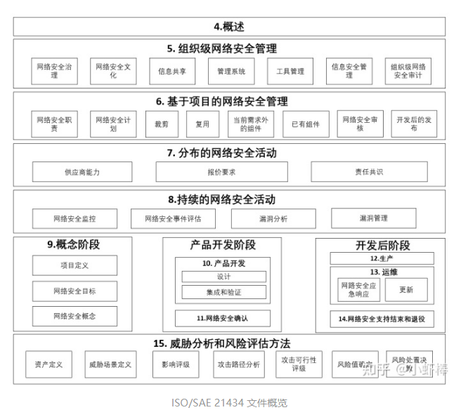
ISO/SAE 21434正式版于2021年8月31日发布，标准共由15个章节组成，其中主体部分为4-15章。
第4章 概述：包含本文件中采用的道路车辆网络安全工程方法的背景和总体信息。
第5章 组织级网络安全管理：包含组织层级网络安全方针、规则和流程的规定和管理要求。
第6章 基于项目的网络安全管理：包含项目层级的网络安全活动和管理要求。
第7章 分布式网络安全活动：包含客户与供应商之间网络安全活动的职责确认的要求。
第8章 持续的网络安全活动：包含对项目生命周期中，需持续实施的风险分析和E/E系统的漏洞管理活动的要求.
第9-14章 描述了从概念设计到产品开发、验证、生产及后期运维和退役全生命周期的网络安全活动和相关要求。
第15章 威胁分析和风险评估方法：提供了一套网络安全威胁分析、风险评估及处置的方法论。
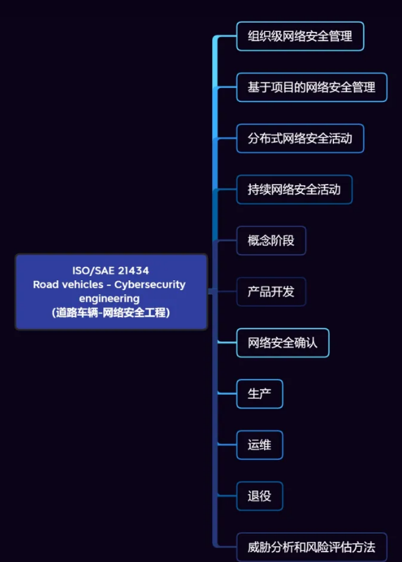
第4章 总则
研究对象和范围
实现整车特定功能的相关电子器件和软件 范围包含了车辆的全生命周期
风险管理的概念 (核心概念)
它是一项贯穿产品整个生命周期的持续性活动。在开发阶段，主要关注威胁分析和风险评估（第15章）以及通过纵深防御缓解网络安全风险；在运维阶段，通过安全监控、漏洞管理和安全事件响应等持续的网络安全活动（第8章），处置不断变化的外部环境中出现的安全风险。此外，风险管理活动可针对项目进行相应的适配和裁剪（第6章），对于分布式开发的环节，需要明确客户与供应商的网络安全职责（第7章）。
第5章 组织级网络安全管理（organizational cybersecurity management）
规定了公司/组织层面网络安全管理的要求，是组织内部最高层面的安全方针，标准中从7个方面提出了要求：
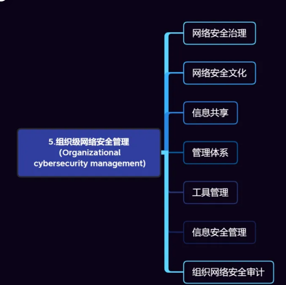
1.网络安全治理（cybersecurity governance）
5点 领导层重视 流程保证 职责划分 资源保证 与现有流程的结合
2. 网络安全文化（cybersecurity culture)
3点 建立良好的网络安全文化 保证人员的能力和意识 持续改进
3. 信息共享（Information Sharing)
信息共享要求组织必须考虑组织内外部哪些数据共享是必须的、允许的，哪些是被禁止的，并根据这个准则去管理与第三方共享的数据。
信息分级 信息共享流程 专用传输工具 披露原则
4. 管理体系（Management System)
组织应建立一个质量管理体系来支撑网络安全工程。主要支持网络安全工程中的变更管理、文档管理、配置管理和需求管理。其中产品的安全配置信息必须在产品终止维护前保持可用。此外，本节中还建议组织制定生产制造环节的网络安全管理体系。
5. 工具管理（Tool Management)
开发阶段 -模型开发，静态代码检查，验证工具
生产阶段 -软件刷写工具、产线检测仪
运维阶段 -在线诊断工具
6. 信息安全管理（Information security management)
信息安全管理系统
7. 网络安全审计（organization cybersecurity audit）
- 审计人可以来自组织内部或外部，但必须保证审计的独立性，关于独立性的要求可以参考26262中的相关描述。
- 网络安全审计可以包含在质量体系的审计中（如IATF 16949）。
- 审计可以分阶段进行
第6章 组织级网络安全管理（organizational cybersecurity management）
描述了适性的针对项目网络安全活动的管理原则。包括各项活动的职责分配，制定网络安全活动计划，裁剪原则，以及网络安全案例和网络安全评估、后开发阶段释放的要求。
网络安全职责（Cybersecurity Responsibilities)
网络安全计划（Cybersecurity Plan)
裁剪（Tailoring)
网络安全案例（Cybersecurity case)
网络安全评估（Cybersecurity Assessment)
后开发的释放（Realease for Post-Development)
第7章 分布式网络安全活动
规定了分布式开发中的网络安全活动，可以理解为在网络安全角度如何进行供应商管理。21434是一份面对整个汽车行业的指导标准，因此对供应商管理要求的适用范围不仅限于OEM，同时也适用于Tier 1, Tier 2等供应链上各环节的企业和组织，此外，组织的内部供应商也需要遵循本章要求。在21434中，分布式的网络安全活动主要有3项：
- 供应商能力评估
- 报价
- 网络安全职责界定
第8章 持续的网络安全活动
主要描述持续的网络安全活动。车辆网络安全工程是一项贯穿产品全生命周期的持续性的活动，OEM（原始设备制造商）不仅要进行TARA分析、安全概念设计、网络安全开发测试和生产，还要在项目的全生命周期中，持续地收集和监控与项目有关的网络安全信息，建立信息监控和漏洞管理机制，持续地保证产品的网络安全。新漏洞的发现、网络安全突发事件的发生、新攻击技术的出现等都有可能触发相应的网络安全工作。
网络安全监控（Cybersecurity Monitoring)
外部来源：网络安全研究人员、商业/非商业来源、供应链、客户、政府
内部来源：网络安全声明，网络安全规范，过往的漏洞分析，威胁场景，现场获取的信息（如漏洞扫描报告，维修信息，客户使用信息等）
网络安全事件评估（Cybersecurity Event Assessment)
漏洞分析（Vulnerability Analysis)
漏洞管理（Vulnerability Management）
第9-14章 概念阶段
从第9章至第14章，21434描述了车辆从概念设计到退役的全生命周期各阶段的网络安全要求。第9章概念阶段（Concept phase）的主要工作是定义网络安全对象，并通过TARA分析，确定网络安全目标，产生相应的网络安全概念。
对象定义（Item Definition)
实现整车特定功能的相关电子器件和软件，它可以由一个或多个Component组成，具体来说可以是整车中实现某个/某类功能的系统、零部件甚至是整车的E/E架构。item是网络安全工程的研究的对象，它是后续一系列网络安全活动的基础。
网络安全目标（Cybersecurity goals)
网络安全目标是最高层级的网络安全要求，它基于威胁分析和风险评估（TARA）得出的，TARA的方法论将在第15章中进行介绍。根据网络安全目标制定对应的网络安全要求，对于保留风险和转移风险的项，还应解释其合理性。
网络安全概念
网络安全概念包含了网络安全要求和对运行环境的要求，是对于分析对象全面的网络安全需求。
第9-14章 产品开发
在产品开发阶段，应根据网络安全概念，制定详细的网络安全技术规范，并将需求逐层分解到下游的子系统、零部件层，完成相应的架构设计和详细设计。在V模型右端，进行集成和符合性测试，以保证相关的组件、系统符合V模型左端对应的网络安全设计规范。
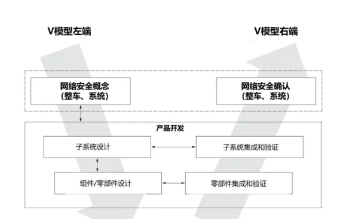
设计阶段
集成与验证阶段
第9-14章 网络安全确认（Cybersecurity Validation）
在该阶段，确认活动的对象是整车，并且是符合量产状态的整车。
该阶段的主要目标有以下3个：
- 验证网络安全目标和网络安全声明
- 确认对象达到了网络安全目标
- 确认没有不合理的风险存在
如何确认 1. 渗透测试 2.专家评审
第9-14章
第12章 生产，第13章 运营与维护和第14章 结束网络安全支持和停用被统称为“后开发阶段（Post-development)”
12 生产
生产的范围包含了零部件、系统、整车的生产和装配，包含在OEM，供应的工厂的生产活动。21434中对于生产过程的要求有两条：
1.应实现与生产有关的网络安全需求
2.防止在生产过程中引入漏洞
13 运营与维护
运维阶段的活动有两个：网络安全事件响应和更新
网络安全事件由漏洞管理流程触发，当漏洞发展成为网络安全事件后，通过应急响应对安全事件进行处置。
更新指因漏洞修复，功能改进等原因对系统或组件进行更改，例如售后更新，OTA等。更新活动发生在车辆销售之后，对于概念、开发和生产阶段的更改，属于变更管理的范畴，不属于更新。
14.结束网络安全支持和停用
停用和结束网络安全支持是两个不同的概念 。组织可以结束对某个对象/组件的网络安全支持，但是其依然能够按原有设计正常运行。而用户停用某个对象和组件可能会在组织不知情的情况下发生，组织无法执行相应的停用程序。
21434中对于结束网络安全支持提出的要求是：应建立一个机制，在组织决定停止对该项目或组件的网络安全支持时向客户通报。对于停用，则要求在制定后开发阶段的网络安全要求时应考虑停用的影响。
第15章 威胁分析和风险评估 (Threat analysis and risk assessment methods, TARA）
通过识别整车/系统的网络安全资产，分析其的潜在安全威胁，综合考虑威胁攻击可行性、危害影响等因素，识别出整车/系统可能存在的风险，并确定其风险等级，为网络安全正向开发、安全漏洞修复提供依据。
TARA是以往的整车开发中没有的一项活动，因此是网络安全开发的一项主要的增量工作，TARA可在车辆的全生命周期的各个阶段进行，例如在概念阶段识别整车的网络安全风险，作为整车网络安全概念的输入，或者在后开发阶段对漏洞进行分析，确定漏洞的风险等级，指导后续的漏洞处置。
在发布版的21434中，把TARA分析的方法论放在了第15章中进行介绍。TARA主要分为七个步骤
- 资产识别
- 威胁场景识别
- 影响评级
- 攻击路径分析
- 攻击可行性等级
- 风险确定
- 风险处置决策
产品
vicone https://www.vicone.com/
xZETA
针对已知或不明的漏洞、潜在恶意软件与后门风险的多层次安全保护
有效率地扫描软件环境中的风险
xZETA旨在降低软件定义车辆（SDV）以及电子控制单元（ECU）等基于软件的元件的风险。该扫描不仅考虑系统在其环境上下文中的漏洞风险，而且还具有在沙盒中执行恶意软件和后门扫描的能力。这将提高对未公开漏洞的可见性，同时显示恶意软件和后门风险。
最大限度地减少误报并专注于威胁
超越代码级别，使用考虑系统环境上下文的扫描程序，专注于实际威胁而不是误报。
发掘更深层次的见解
利用VicOne内部研究团队和零时差计划（ZDI）的独立研究人员的专业知识，获得对未公开漏洞的预见性。
xZETA产品的整合
VicOne的xZeta涵盖了漏洞、恶意软件和后门扫描；透过与xNexus、xSUMO和xCarbon的深度整合，识别汽车生命周期和网络安全框架中的潜在威胁。在漏洞风险扫描阶段，xZETA会考虑环境上下文以最大限度地减少误报，同时建立汽车级别的沙盒来侦测潜在的恶意软件和后门。
云驰未来 http://www.inchtek.cn/
自动驾驶汽车信息安全 ECU信息安全 智能汽车SIM卡管理 智能交通 RSU信息安全 特殊车辆（车队）管理
智能汽车安全网关
概述
国内第一款面向无人驾驶汽车的车规级中央安全网络控制器平台
云驰未来专为自动驾驶和智能网联汽车量身定制的产品D2000、L3000、A1000等系列产品，通过车规级和EAL4认证，可为智能汽车提供异构网络的组网方案，并抵御网络攻击的威胁，满足不同车身网络架构对网联通信、安全的不同需求；已率先在百度Apollo、京东物流等头部自动驾驶公司量产落地，满足自动驾驶高安全、高性能、高可靠要求。
ECU/DCU安全中间件
安全中间件是基于汽车嵌入式操作系统的信息安全软件框架，为智能汽车的车内各个ECU/DCU部件，以及车联网系统终端提供信息安全能力。包含了构建车载信息系统安全框架所需的各个组件，提供了防火墙、数据加密、认证鉴权、攻击防护、入侵检测、安全日志等的安全能力；并支持安全策略远程配置方法，助力智能汽车电子部件和车载网联终端轻松构建信息安全保障能力。
云驰智云安全运营中心VSOC
基于海量数据构建威胁模型，实现从采集、分析、预警、处置的全流程风险管控，实时保障车辆行驶安全。可以配套提供汽车网络安全态势感知监控系统产品及解决方案，或定制企业级解决方案和开发服务，实现汽车网络信息安全可见、可管、可控、可信。
集合运维服务，为国家、行业和企业等汽车网络信息安全要求，对汽车网络异常、攻击事件等监控数据进行分析评估，制定应急响应方案和处置策略，执行网络安全策略更新，提升汽车整车网络系统的防护能力。
泽鹿安全 http://www.secdeer.com/#/production
车联网安全综合靶场
海量武器库、车联网典型场景库 漏洞库、课程资源,帮助安全人员对车联网设备快速开展漏洞研究
技术亮点
- 固件资源防下载 过虚拟化的技术基于SDDC（软件定义数据中心）打造而来，使用分布式虚拟化技术。研究人员通过虚拟化环境对固件进行漏洞挖掘，只能上传文件，无法下载任何文件及字符，可以确保研究文件不会泄露
- 虚拟化车联网安全靶场 可实现对车联网核心组件的计算服务器的虚拟化， 提供整车部件的车体组件资源库，包含靶场资源及仿真环境模板库（支持固件仿真、安全设备仿真、T-BOX、IVI、OTA、Web、APP等）、
- 车联网安全资源体系 包含车联网漏洞库、靶标库、场景库、课程库，可以让研究人员方便的进行车联网漏洞的验证、学习及科研
- 车联网安全检测平台 车联网工具集与自动化测试平台，包含Web平台、APP安全、车内总线安全、蓝牙安全、Wi-Fi安全、固件安全检测六大检测模块，可针对检查工作中的管理和技术指标进行全面检查，生成专业的安全评估报告
- 车联网安全风险可视化跟踪 基于威胁情报可视化、漏洞信息可视化、漏洞修复进度可视化、风险溯源可视化、攻击路径可视化、威胁程度可视化等多角度信息生成全场景的车联网风险视图，帮助企业建立完善的车联网漏洞风险生命周期跟踪进制
车联网安全实训平台
支持物理设备资源调度实现资源共享，提供虚拟化教学管理
平台提供车联网安全相关系列课程、安全实验、漏洞验证、模拟考试等教学服务
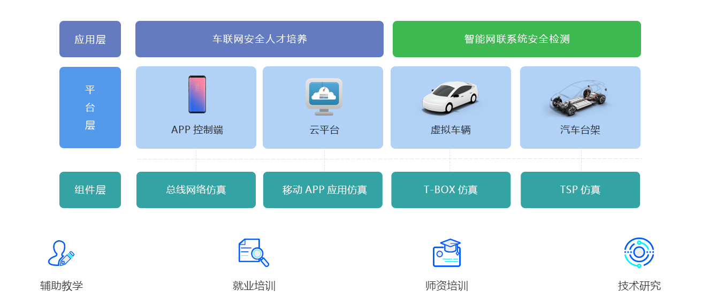
车联网安全检测实验室
集安全工具与运营平台于一体的系统全面、完善的车联网安全检测实验室
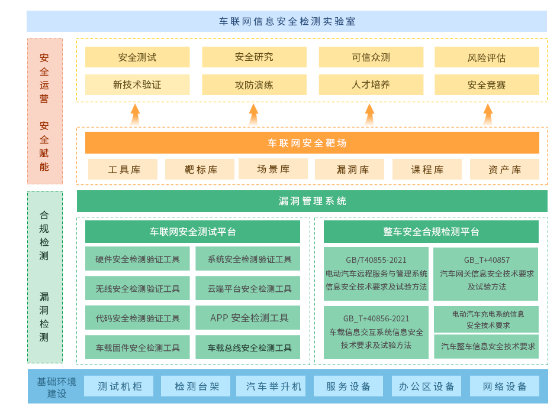
整车安全合规检测平台
面向车联网的安全检查和评估评测，提供专业的工具集与自动化的管理平台
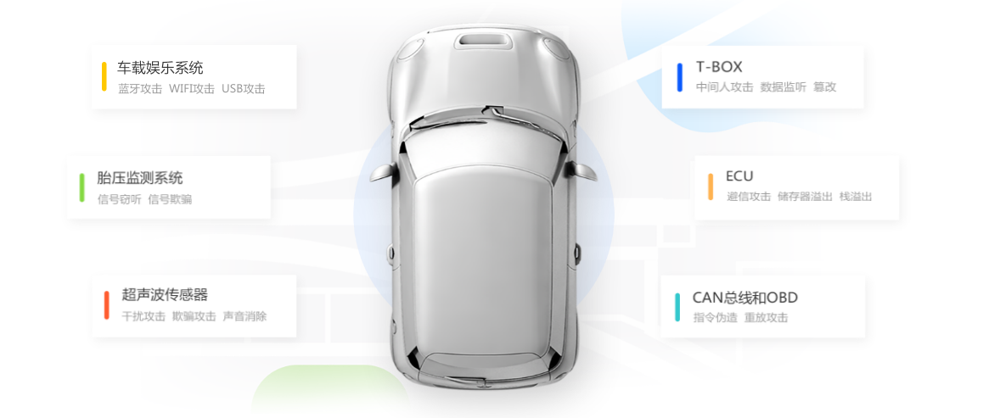
Web安全检测
针对车联网相关的TSP平台、OTA平台等云端相关的平台快速识别资产并发现分析漏洞，用户通过控制台选择需要扫描的漏洞对目标主机进行模拟攻击，支持模块化定制
APP 安全检测
覆盖Android和ios两大平台，主要针对汽车车机中的APP应用及手机APP应用进行相关安全检测，具有超过100个检测项目，呈现详细的安全问题详情，并提供代码修复示例
CAN总线检测
可通过数据检测、功能逆向、暴力攻击的方式对车辆总线进行全方位的自动化安全检测， 针对车辆的行驶状态下和静止状态下的总线变化进行数据分析，挖掘总线可能存在的逻辑漏洞
蓝牙安全检测
针对车载蓝牙协议的风险进行安全检测，包括蓝牙扫描模块、流量重放模块、拒绝服务攻击模块以及CVE检测模块等
WIFI安全检测
针对车载Wi-Fi协议的风险进行安全检测，包括Wi-Fi扫描模块、密码破解模块、fuzz攻击模块以及CVE检测模块等
固件安全检测
通过自动化的方式从固件自身信息、敏感信息、代码安全、配置风险、CVE漏洞等多个检测维度，识别和分析车联网设备固件可能存在的风险漏洞
360车联网安全 https://car.360.net/
车联网安全大脑开放平台（未上线）
提供专业的车联网安全检测、监测能力，平台将不断开放360车联网安全研究院的研究成果转化，以工具、知识订阅等方式提供更专业的汽车信息安全服务。
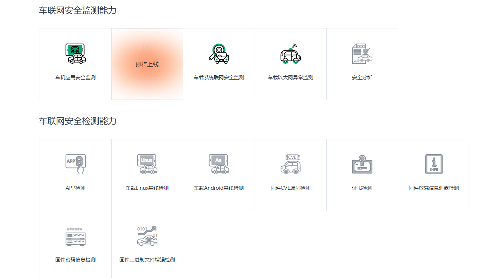
360车联网安全检测平台
为智能网联汽车提供网络安全验证的基础设施。平台通过完善的测试管理机制，将安全检测工具、引擎和检测知识库进行场景化融合，为车企、汽车检测机构的汽车网络安全合规测试、安全验证等场景提供基础支撑环境。平台拥有强大的检测知识库，持续跟进行业动态，将车联网法规标准转化为简单可行的测试用例，使得安全检测工作规范化、流程化，通过灵活的API，可与车企研发流程无缝介入，助力车企安全左移工作有效开展。
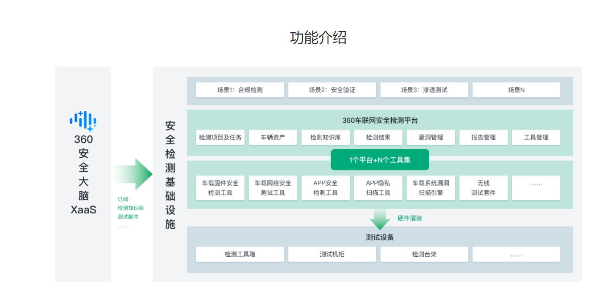
核心能力
车载系统合规检测引擎
支持车载系统（包括Android、Linux）的安全合规检测，主要覆盖系统、应用软件、通信协议、数据安全等方面的安全合规检测，满足国家对车联网系统合规检测要求。
车载固件安全检测工具
支持从车机、网关、T-BOX及ECU中提取的固件进行分析检测，支持多种文件格式、文件系统格式及固件格式，可识别系统基本信息、指令集架构等。支持敏感信息检测、证书检测、密码安全测试，支持elf安全检测，支持Linux系统基线检查。
车载系统漏洞扫描引擎
支持对车机、网关、T-BOX及ECU的漏洞扫描，覆盖应用层、WEB层、系统组件、系统框架层（Android系统）、Linux驱动及内核层进行 CVE 漏洞扫描，支持对二进制文件进行CWE漏洞扫描，支持对APK进行通用漏洞检测。
APP安全检测工具
账户登录安全验证、密码修改安全性测试、防调试检测、暴力破解、源码反编译安全测试、源码二次打包安全测试、权限信息安全测试、So文件安全测试、代码混淆测试、Dex脱壳、安装包签名破解测试、VMP脱壳。
车载网络安全测试工具
支持 CAN 总线实时数据保存、重放、分析，支持 CAN 总线模糊测试，支持 CAN 总线 UDS 服务测试，支持 CAN 总线路由功能，支持车载以太网端口扫描、服务扫描。
WiFi 安全测试工具
支持 WiFi 热点扫描，支持抓取协议握手包，支持对目标设备进行拒绝服务攻击、钓鱼 WiFi 攻击、弱口令检测、端口扫描、协议漏洞扫描等安全测试。
蓝牙安全测试工具
支持蓝牙设备扫描，支持对目标蓝牙设备进行加密方式分析，可对目标设备的通信数据进行数据抓取、重放，支持对目标设备进行拒绝服务攻击、协议漏洞扫描等安全测试。
GPS 安全测试工具
支持针对目标设备的 GPS 抗欺骗能力进行安全测试。
蜂窝网络安全测试工具
支持对无线通信协议进行安全测试；支持在受控网络条件下，为目标设备提供可用的网络环境。
密码破解测试工具
支持对目标设备、系统、协议进行密码强度测试，支持多种设备、密码算法。
360车联网安全监测平台
基于对车联网环境的重要组件(如：IVI（车载信息娱乐系统）、T-Box（用于和后台系统/手机APP通信）、OBU（车载电子标签）、RSU（路侧单元）等)的数据采集，利用大数据分析等先进技术，结合360安全大脑提供的分析预警和威胁情报，为车企、车路协同示范区车联网系统建立安全威胁感知分析体系，实现智能网联汽车安全事件的可感、可视、可追踪，符合智能网联汽车合规准入，以及ISO/SAE 21434、ITU-T X.1376标准的相关要求。
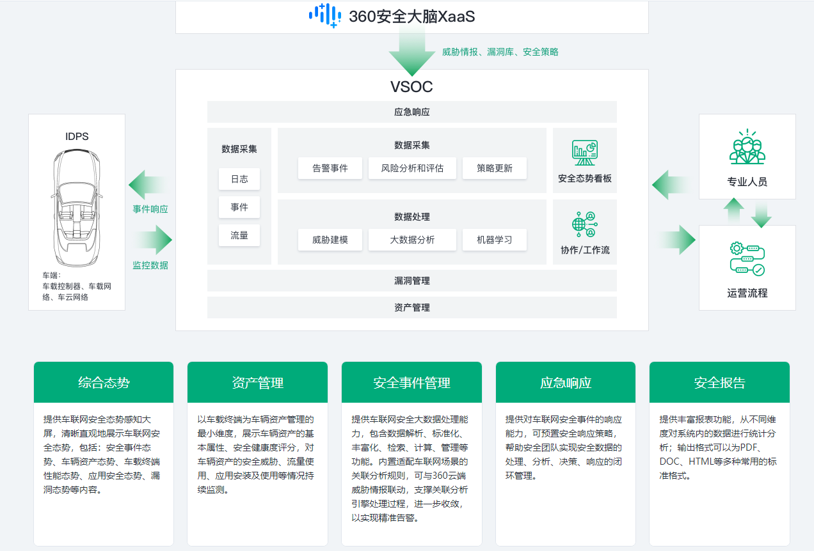
车机应用安全监测
识别应用指纹、版本、权限获取等信息，对异常应用、应用异常行为、应用权限等进行安全监测。
车载系统安全监测
对系统调试接口调用、指定路径的文件的操作行为、非授权进程、用户登录行为等进行安全监测。
车载系统联网安全监测
支持访问控制策略，可提供基于黑白名单的过滤机制，能够对网络层和传输层的网络攻击事件进行监测。
车载以太网安全监测
支持协议类型、协议端口、应用层（如SOME/IP）特征的访问控制，能够对以太网DOS攻击事件进行监测。
车载总线安全监测
能够对报文（如总线负载率、报文ID、长度、周期、合理性、信号合理性等）进行监测，必要时可以支持明显异常报文拦截。
网络安全事件
黑客攻击智能汽车的技巧核心，是经由过程OBD、近场通讯、云服务平台三种方法，入侵CANBus总线体系，来完成对汽车的控制。
1. 暴力破解
4090发布 效率为 3090 两倍
Hashcat（最新版 6.2.6）的核心开发者山姆·克罗利（Sam Croley）
通过8块RTX 4090组成的显卡阵列，一串由数字、大写字母、小写字母以及符号组成的标准八位密码，仅需要1小时左右即可完成破解。是 RTX 3090 的二分之一
Hashcat是一个需要离线部署的破解工具，难以对一般用户造成影响
2.供应商攻击
以支持无钥匙进入及启动系统的车辆为目标，滥用该技术将汽车开走。
欺诈工具原本被作为汽车诊断解决方案销售，可用于替换车辆的原始软件，能够在未拿到车钥匙的情况下打开车门并启动点火装置
3.同产品安全防护相同
无钥匙系统
有些汽车公司的安全措施。只要想办法入侵了一辆车，往往就能入侵同品牌旗下的所有车型
近几个月来特斯拉、本田汽车均已相继沦陷
4.远程操控
前得克萨斯汽车中心雇员，在2010年利用收回软件远程禁用了100多名司机的车辆
2018-05-22 腾讯科恩实验室 宝马多款不同车型通用漏洞
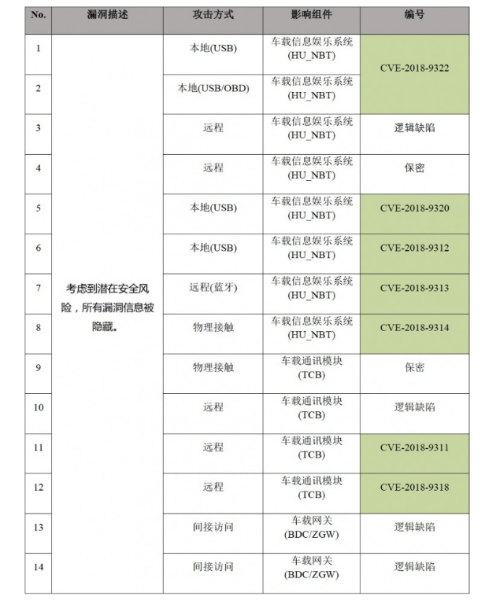
福克斯
黑客可以欺骗车辆控制系统，即使轮胎处于没气状态，仍可伪造数据显示胎压正常，给车辆带来安全隐患
黑客获取智能汽车的T-Box通讯模块后，即可通过通讯模块接入车厂私有网络，进而攻击车厂内网导致TSP沦陷。
通过使用一种名为Worley的噪音（Worley噪声能够模拟石头，水或其他噪音的纹理）生成函数，通过加补丁的方式生成所需的对抗样本图片，可以启动特斯拉的自动雨刮器；在道路上贴上对抗样本贴纸，则能误导自动驾驶系统，使车辆行驶到对面的车道造成逆行。
Pandora的警报器厂商
Pandora和Viper这两家厂商，它们的产品目前分别占据全球汽车警报器市场的第一和第二，API中不安全的直接对象引用漏洞（IDOR）
攻击者就可以通过发送恶意请求来修改用户的密码，并控制账户来与汽车警报系统进行交互，而合法用户将无法登陆账号，并且无法访问他们的汽车警报系统。 远程控制，取消原主人权限，克隆车钥匙，实时跟踪，音频窃听
车联网安全漏洞挖掘
车端固件安全、移动APK安全、无线通信安全、车内网络安全、加密与解密、云端应用安全、硬件安全
1.车机固件提取
信息收集
收集储存芯片型号、封装信息、Datasheet flash 起始位置，大小等信息
选择合适的拆焊工具、根据封装选择编程器
固件解包、固件逆向
安全漏洞验证工作
2.隐藏调试分析
官方 " 后门 "，通常是为了发现问题或解决问题（售后）而预置的一个用于调试分析的功能模块，工作人员在进行维护时，通常会点击特定位置，通过特定窗口输入密码进入工程模式。这些密码会对外保密，一方面防止车主误操作，另一方面是减少黑客和改装厂篡改系统的风险。工程模式是检测汽车故障的有效路径，我们通过前面的方法把固件提取出来，可以通过固件逆向获取 " 暗码 "。
1.搜索引擎、汽车论坛、汽车群等方式搜索到 " 暗码 "
2.通过汽车群拿到更新包，通过逆向拿到调试码
3.通过咸鱼买相应的车机去提固件获取调试码
3.常见漏洞挖掘
拆解硬件 分析芯片和调试口 进行探测 从以太网端口固件进入并分析其系统
在固件代码中植入远程指令（刷固件），并通过这些指令达到控制车机的目的。
车联网平台服务端与终端交互的安全风险
车载终端枚举
探测真实存在的终端手机号，通过此方式实现专项渗透测试攻击，极易锁定相关目标。
车载终端异常数据伪造
终端在正式进行使用之前，设备首先会发送注册数据通过服务端进行注册，服务端注册成功后终端将获得鉴权码，并把相关注册信息在平台保存。这一过程中看似没有相关安全风险，但是如果攻击者通过伪造注册请求或者其他符合协议的异常数据内容，服务端将会出现大量异常设备验证或鉴权操作错误日志与记录，干扰管理人员审计；并以此消耗服务器运算资源，从而可能导致服务端拒绝服务。
车载终端通信伪造
因此再得知设备的终端手机号车牌号等信息的情况下，可以通过模拟设备与数据平台进行通讯，发送异常报警与位置数据。
车联网平台服务端安全风险
服务端管理WEB安全风险
车联网平台为了便于使用者的访问和操作，通常使用Web服务来实现管理平台端。因此同样易受到各类Web安全风险影响，如弱口令、敏感信息泄露、未授权访问、中间件RCE等安全风险影响。
API接口安全风险
一些车联网平台的移动端程序与服务端进行数据交互一般通过API接口来实现，同时API接口也被用于第三方平台请求车联网平台的数据。这些API接口可能存在着安全隐患，例如：越权，输入控制（xss、注入），接口滥用（爆破），信息泄露等。
平台运维管理风险
车联网平台功能众多，操作起来相对复杂，并且平台部署涉及诸多软件和服务，例如运维配置不当导致车辆信息报送漏发、错发数据造成的风险等。平台管理安全意识不足或对平台使用不理解则可能导致管理账号弱口令，下级账号权限分配不当以致信息泄露或越权操作等安全风险。
软件定义车联网的组网技术和漏洞挖掘的常用方法
1 车联网组网技术概述
1.1 传统车联网技术
随着汽车数量的不断增长，世界上许多国家都面临随着严重的交通堵塞和环 境污染问题。为了解决这种问题，各国先后在推广车辆限行、扩大公共交通、发展新能源汽车等方面进行了诸多尝试，但结果均差强人意。近年来，随着5G、人工智能、边缘计算等技术的不断发展进步，智慧交通逐渐成为研究的热点。车联网作为智慧交通建设的重要基础，具备道路感知、车辆感知、行人感知等特性，在提升道路安全和提升通行效率方面具有天然的优势。车联网的发展主要经历了早期的VANET技术和如今的V2X技术两个阶段。
VANET的概念起源于移动自组织网络(Mobile Ad-hoc Network,MANET) , 继承了其动态拓扑、自动组网和位置分散的特点。VANET的基本架构中主要包含两种类型的车辆通信：车辆到车辆(Vehicle-to-Vehicle,V2V)通信，车辆到基础设施(Vehicle to Infrastructure,V2I)通信。通过V2V通信，车辆可以实时监控附近道路上其他车辆的信息，为驾驶提供高科技解决方案,实现车辆安全和智能驾驶。通过V2T通信，车辆可以获知有关周围各种设施的信息，实现数据网络访问和服务信息获取。VANET的通信系统通常由路边单元(Road Side Unit,RSU)，车载单元(On-board Unit,OBU)和专用的短距离无线通信协议组成，确保了车辆能够在移动环境下能够获得网络接入。
V2X思想的出现得益于物联网的高速发展，5G的出现带来的高吞吐与低时延特性使得车辆与万物互联成为可能。V2X通信分为五种主要类型，除了上述的V2V和V2I以外，还包括车辆到行人(Vehicle-to-Pedestrian,V2P) 通信、车辆到设备通信(Vehicle-to-Device,V2D)以及车辆到网络(Vehicle-to-Network,V2N)通信。V2P旨在在车辆与用户随身携带的设备之间建立通信，可以实现人对车辆的非接触控制，比如远程开关车门。可以满足用户对车辆信息的获取，比如基于定位的距离提醒和对车辆自身属性的感知等等。V2P虽然是通过与人携带的设备通信，但其核心在于以人为本的通信服务，而V2D指的是车辆与自身搭载的所有电子设备之间进行信息交换，比如红外传感器、车载蓝牙设备、智能摄像头等。V2N旨在将车辆与云端车联网平台连接到一起，通过云平台的统一管理实现路径规划、精准定位、信息娱乐等功能。如图1是一个典型的车联网架构。
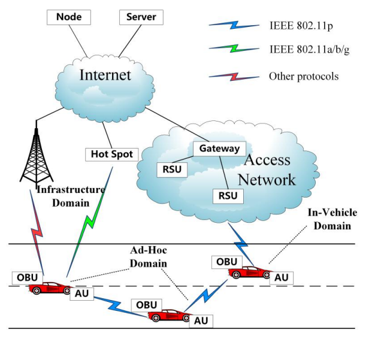
图1 车联网基本架构图
国际上主流的车联网中无线通信技术主要有两种，一种是基于802.11P的专用短程通信(Dedicated Short-Range Communications,DSRC)技术，另一种是基于蜂窝移动网络(Cellular V2X,C-V2X)的通信技术。欧美等汽车发达国家起步较早，已经对DSRC技术有了较为成熟的研究和应用，但随着频谱划分越来越细和标准制定的困难，DSRC发展增速放缓。近几年中国大力发展4G和5G，在C-V2X的研究道路上属于后起之秀。C-V2X能够复用旧式蜂窝网络，信号覆盖范围广，运营模式经历了多年实践日益精进，是当前首选的V2X通信技术。
总体来看，车联网具有如下特性：
(1) 天然的高速移动性。车辆的自身使命就是移动，由此带来了高变化的动态拓扑、通信链路维持时间短等弊端，但也为移动边缘计算、边缘存储等新兴技术提供了孵化场景，有利也有弊。
(2) 需要持续、可靠、稳定通信连接，对实时性要求极高。自动驾驶、交通安全等应用场景下必须保证极低的时延和稳定的连接，否则便有可能引起安全事故。而车辆的连接容易受到复杂环境因素的干扰，因此必须解决通信服务质量才有可能提供安全稳定的车联网服务。
(3) 统一管理难度逐步加大。多种无线通信技术、异构网络、新型网络设备 的加入,使得对车联网的统一管理难度加大，网络拓扑难以在短时间内快速获取，基于云端的车联网管理平台又存在一定延迟，网络的管理成本逐步增加。
1.2 软件定义网络基础
SDN的概念最早由美国斯坦福大学的McKeown教授及其团队提出，主要目的是用于解决传统因特网封闭式网络架构设计带来的难以进化发展的问题。从网络发展历史来看，SDN的诞生具有其客观必然性。传统网络经历了几十多年的发展早已变得臃肿不堪，期间产生了为数众多的的通信协议和网络设备，每一次新型协议部署和设备升级都耗时耗力，越发困难重重。SDN凭借其数据转发和控制分离的新颖思想快速获得了来自学术界和工业界一致的青睐。时至今日，全世界已经有诸如谷歌、Facebook等大厂将SDN技术应用于其商业化的数据中心。SDN的早期发展历史如表1所示。
表1 SDN早期发展历史
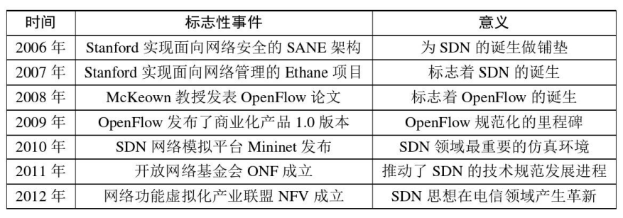
1.2.1 SDN 网络架构
SDN采用分层思想设计，将传统网络功能中的数据转发和控制进行解耦分离，形成了自上而下的“应用层—控制层—数据层”的三层网络架构模型。每一层的功能与其各自的名称高度对应。应用层主要负责实现基于底层网络资源实现的各种功能型应用以满足不同用户对于网络功能的不同需求，主要包括负载均衡、路由、服务质量、防火墙等功能，这些应用由专业人员根据需求进行定制化开发，实现了网络的可编程能力。控制层是应用层和数据层交互的媒介，用于控制整个网络中的数据转发规则。控制层通过基于软件实现的SDN控制器实时收集来自数据层的整个网络中的信息和状态，通过北向接口(North Bound Interface,NBI)向上提供给应用层，并具备将来自应用层的规则转译为底层硬件设备能够执行的硬件级指令能力，将其通过南向接口(South Bound Interface,SBI)下发到数据层以执行来自上层的命令。这一过程与高级编程语言经过编译器编译后转换成机器可以执行的机器码过程极为类似，这也是SDN设计理念借鉴了计算机设计原理的精华而具备可行性的原因所在。在实际应用中，SDN控制器可以根据需求以分布式的形式而存在，物理分散而逻辑集中，满足实际网络应用中丰富的需求类型。数据层位于三层架构的最底层，由SDN交换机及其他各种网络设备组成，主要负责整个网络中的数据转发功能。SDN交换机通过控制器统一下发的流表来匹配每一项数据流的执行动作，整个数据层资源被抽象成统一的硬件模型，所有网络协议通过控制器和流表来实现，从而提升了网络的灵活性和可扩展性。
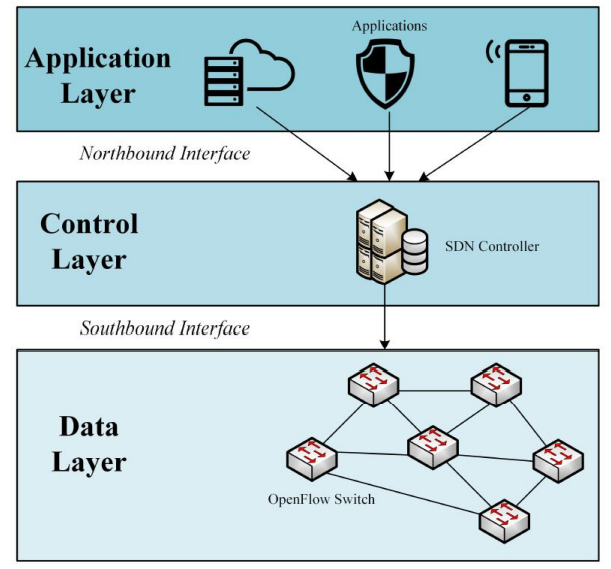
图2 SDN基本架构图
由于SDN采用了分层架构设计，因此从北到南各层之间的通信通过南/北向接口来实现。SBI提供了控制器对数据层抽象硬件资源的编程能力，而NBI提供了应用层对控制器的编程能力。在SDN发展历程中，OpenFlow协议是最早采用的也是ONF官方提出的SBI标准协议，因此主流的SDN控制器都采用OpenFlow协议作为SBI，而NBI目前还在统一标准化的道路上不断探索前进，因此不同的 控制器拥有不同的NBI。另外，有学者提出了SDN东西向接口(EastWest Bound Interface,E/WBI)的概念，用于实现多个SDN 集群之间进行控制器间的跨域通信，这将进一步拓宽SDN网络之间和传统网络的对接能力。主流的SDN架构图如图2所示。
SDN的本质在于控制和转发的分离，具体体现在网络设备的软硬件解耦、控制层与数据层解耦。基于统一的全局网络资源视图和对网络资源进行抽象的南北向接口，提供了整体网络可编程性，从而使得SDN拓宽了很多领域的问题解决方案。有效实现了网络资源的抽象隔离，解决了网络资源冲突，提高了网络资源分配效率。
1.2.2 OpenFlow协议
OpenFlow协议属于数据链路层通信协议，最早由斯坦福大学提出并应用于SDN中作为统一控制数据层资源的通信协议，使得SDN控制器能够与硬件之间进行直接交互。经历了十多年的发展和ONF的大力支持，OpenFlow已经成为全世界使用最广泛的 SDN南向接口协议。OpenFlow体系由支持OpenFlow的控制器和交换机以及不断更新完善的OpenFlow协议共同组成，它将数据层抽像出来并构成一个多级流表转发模型。OpenFlow协议允许软件应用程序对不同交换机的流表进行编程。OpenFlow交换机使用流表转发数据包。流表是流条目的列表集合，每个条目都有匹配字段、计数器和指令三个流表项。传入交换机的数据包将与每个条目的匹配字段进行比较，如果存在匹配，则根据该条目包含的操作对数据包进行处理。计数器用于保持有关数据包的统计信息。指令代表交换机对该数据包执行的动作。如图3是一个基本的OpenFlow流结构。

图3 SDN流结构
OpenFlow协议在ONF组织的不断推进下，经历了多个版本的变迁。Open- Flow 1.0是一个推出用于商业用途的版本，仅支持单个流表和IPv4网络；OpenFlow 1.1版本加入了对多级流表和组表的支持；随着SDN架构的完善和演进，在Open- Flow1.2版本中加入了对多控制器的支持，同时还支持了IPv6网络；之后OpenFlow的更迭速度不断加快，但并非所有的网络设备都支持最新协议，因此在OpenFlow 1.3版本中加入了对使用协议版本的协商功能，控制器和交换机之间可以经过协商统一后自由选择使用的OpenFlow协议版本。随后的OpenFlow 1.4和1.5版本继续在流表功能和使用机制方面持续改进和完善，目前，部署率最高且稳定性最好的是OpenFlow 1.3版本。然而，万变不离其宗，OpenFlow中的消息类型按照消息发起对象的不同可分为3种，分别为异步(Asynchronous)消息、控制器到交换机(Controler-to-Switch)消息和对称(Symmetric)消息。
(1) 异步消息
异步消息的主动发起方为OpenFlow交换机，由交换机单向传递给控制器。旨在主动告知控制器当前交换机的状态，用于通知控制器有新类型的数据包到达、网络错误或交换机发生故障等。常见的消息头有：Port-Status用于通知刷新交换机端口状态；Packer-in用于通知未与流表匹配的数据包到达，请求控制器给予下一步的指示、Flou-Removed用于通知流表被删除以及Error用于通知交换机自身故障。
(2) 控制器到交换机消息
控制器到交换机消息顾名思义发起方为控制器，由控制器单项传递给Open- Flow交换机。旨在主动获得交换机状态和对交换机进行查询配置。常见的消息头有：Features用于查询特定交换机的特性，比如支持的版本协议；Modify-State用于对交换机进行配置，最常见的场景就是安装和更改流表；Configuration用于查询交换机硬件性能配置参数；Read-State用于查询交换机上与流表相关的统计信息；Send-Packet用于通过指定端口发送数据包；Barrier用于阻塞消息直到确认收到操作完成通知。
(3) 对称消息
对称消息的发起方可以是控制器和交换机中的任意一方，主要用于双方之间进行消息交互。对称消息与上述两种消息类型的最大区别在于消息的传递遵循时间先后顺序关系。常见的消息头有：Hello用于在建立连接时双方握手；Echo消息用于确认双方之间连接状态情况；Vendor消息用于实现一些厂商自定义的功能。
OpenFlow交换机是OpenFlow协议中流表的主要载体和具体实施对象。每当 一个数据包通过端口到达交换机时，交换机会自动寻找流表中与之匹配的流表项。如果匹配成功，那么便执行流表项中动作字段定义的行为。一旦遇到匹配失败的情况，交换机便向控制器发送异步Packer-in消息请求控制器下发新的流表规则来应对该类型的数据包。控制器通过Modify-State消息安装新的流表规则到交 换机即可实现对先前未知数据包的匹配。需要注意的是，这种机制虽然简单明了但存在被拒绝服务攻击的风险。一旦攻击者恶意制造大量的未知数据包便可造成交换机到控制器的通信带宽资源被耗尽，从而导致正常的数据包无法得到新的流表规则匹配而大量阻塞，影响了正常的网络通信。
目前世界上主流的SDN控制器均支持OpenFlow协议，部分还支持其他类型 的南向接口协议，因此一般对OpenFlow控制器和SDN控制器两个概念不加以明确区分。目前已经出现了许多种类的开源SDN控制器，每种各有其优势和特点。基于Python模块化开发的Ryu以及软件商与设备商主导的OpenDaylight是最著名的两大SDN控制器。主流的SDN控制器对比如表2所示。
表2 主流开源SDN控制器对比
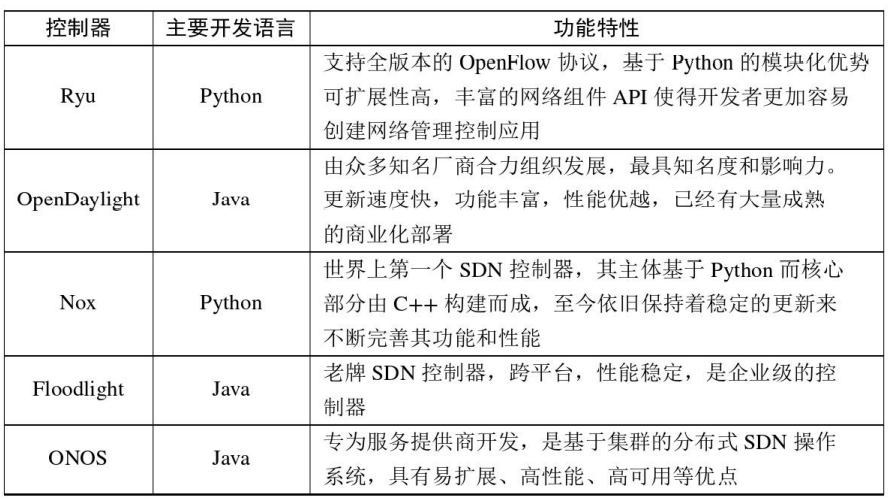
1.3 软件定义车联网
传统车联网由于其分布式特性，无法获取整体网络的全局视图而导致其路由算法容易陷入局部最优，从而进一步导致了资源分配不均和网络利用率不高。车联网与5G网络、无线传感器网络等多种异构网络的融合，使得车联网管理难度加大，部署新协议和新应用的成本加大，可扩展性不高。软件定义车联网架构的提出为车联网引入了SDN的思想，使得网络编程成为可能，满足了车联网场景下日益丰富的用户需求。同时，SDN的高扩展性和灵活性使得车联网中新协议的部署和升级得以快速实现，基于全局资源视图的灵活管控方式使得车联网走出了局部优化的困境，迎来了全新的面貌。
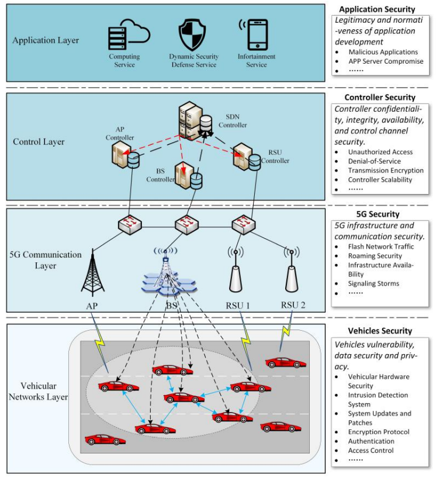
图4 软件定义车联网架构图
与SDN类似，软件定义车联网架构分为应用层、控制层和数据层，如图4所示。从逻辑上讲，它们是一种自上而下的结构，用于抽象车联网资源并集成了多种技术，例如云计算、雾计算和移动边缘计算。应用层可以满足用户和车辆的不同要求。通常，应用层和控制层之间的NBI可以为网络开发工程师提供编程接口以根据需求开发应用程序，得到的车联网应用程序生成数据转发规则和配置策略并将其发送给控制器进行底层控制。控制层可以由一个或多个控制器组成，为车辆分配资源，向RSU、基站(Base Station,BS)等基础设施下发配置数据，提高数据传输效率.通过数据层的状态，SDN控制器可以观察到全局网络拓扑，从而可以实现车联网智能管控方案。数据层包含了所有的车联网接入设施，如SDN交换机、车辆、RSU、BS等。主要承担数据转发功能和部分数据存储功能。车辆可以通过V2V与其他车辆通信，也可以通过V2I与RSU和BS等基础设施通信。RSU可以在资源有限的情况下为周围的车辆提供无线访问，然后BS会向车辆传输无线信号。此外，RSU配备了由各种传感器组成的信息收集模块，因此可以提供周围环境的状态。
软件定义车联网作为一种异构网络架构，提供了多种无线通信的接入方式。控制器一般位于车联网云端数据中心，通过光纤传输方式与基础设施进行通信。在控制与转发分离的核心思想下，RSU和BS只保留提供网络连接和转发流表的功能，其对网络数据的路由控制功能从原有设备中被解耦出来。SDN控制器对全局数据层设备进行集中控制和虚拟化，通过SBI接口向下发送数据规则包、收集数 据层状态信息，之间采用的通信协议为OpenFlow协议。根据SDN控制器掌握的全局网络信息，通过NBI接口进行应用层编程，实现了智能管理控制车联网中的所有数据，完成执行规定的行为和功能。
2 漏洞挖掘技术概述
2.1 漏洞挖掘常用方法
漏洞挖掘是软件和系统安全领域十分重要的一项技术，能够有效的提前预知系统中潜在的缺陷，提前发现威胁从而规避风险。早期的漏洞挖掘通常以人工干预为主，富有经验的漏洞挖掘人员凭借自身实力对软件和系统中存在的漏洞进行挖掘，属于经验型方法。但随着计算机规模的扩大和互联网产业的兴起，纯人工形式的漏洞挖掘方法不再适合于日益激增的软件应用规模数量，此时出现了辅助漏洞挖掘的软件，可以实现半自动化的批量分析，完成一些对分析对象的基本操作。再往后发展，随着大数据、人工智能等技术的兴起，开始出现一些具有针对性的全自动化漏洞挖掘系统，例如对安卓APK的一键分析、对JAVA源代码的静态全自动扫描等，这些系统通常使用静态化的漏洞挖掘方法，结果的可行度高，但存在一定的误报率。
总的来说，从漏洞挖掘的过程来看可分为静态挖掘和动态挖掘两种。静态挖掘即基于源程序的二进制文件、源代码，不对软件系统启动运行，而是令其以静态文件的形式存在，从文件格式、代码关系上寻找出可能存在的漏洞。动态挖掘即将分析对象运行起来，观察其运行期间的程序行为、读写操作、调用函数方面寻求突破。从漏洞挖掘的技术手段来看主要分为白盒测试、黑盒测试和灰盒测试三种。白盒测试是在对分析对象的内部结构、执行流程、源代码完全已知的情况下进行的，常用的是基本路径测试法用于自动化代码审计，市面上已经有很多成熟的商业软件可以使用，效果优秀但价格昂贵；黑盒测试与白盒测试完全相对，漏洞挖掘人员对程序内部的实现原理一无所知，仅能通过程序的输入输出对来判断程序的行为是否异常，其中最著名的当属模糊测试技术，其通过构造大量的畸形数据集输入给程序来使得程序发生崩溃或异常；灰盒测试介于白盒和黑盒二者之间，既对程序的执行流程有一定的了解但又不完全知晓，著名的逆向工程方法便属于这个范畴。漏洞挖掘人员通过逆向工程可以获得程序的汇编代码或反编译伪代码，从而可以推测出程序大致的运行逻辑进而发掘出存在的漏洞。
2.2 模糊测试漏洞挖掘技术
模糊测试是自动化漏洞挖掘领域最重要的方法之一，英文术语为“Fuzzing”。它通过构造非预期的程序输入以达到破坏程序正常运行逻辑触发崩溃的方式来挖掘漏洞。在这个过程中，目标程序将反复被执行给定的输入并处理输入数据，模糊测试器(Fuzzer)通过捕获程序的输出和监视程序的运行状态来判断其是否异常。具体分为如下五个步骤：
(1) 目标程序信息收集。对目标程序的基本信息和详细功能进行分析，在这个过程中探究清楚程序的标准输入输出格式应该是什么样的：如果程序接受的输入是文件，那么支持的文件格式类型有哪些；如果程序接受的输入是字符流，那么字符流应当满足什么样的格式；对于正常输入程序对应的正常输出应当是以何种形式呈现。
(2) 构造模糊测试数据集。模糊测试数据集的好坏直接影响了模糊测试的效果。构造数据集时要考虑到如何在已有数据上进行变异或者如何动态生成新的数据，并且这个过程需要通过算法完全自动化实现。
(3) 执行模糊测试。模糊测试器自动将构造的数据集作为输入提供给程序，根据测试对象的不同可能是发包、打开文件或调起进程，该过程也需要完全自动化实现。
(4) 监视程序运行状态。为了详细记录程序发生异常时是由哪个数据包引起的、当前程序处于什么状态、系统异常信息等，模糊测试器在执行模糊测试的过程中应当实时检测程序，监视过程与执行过程应当是并行的。
(5) 记录异常信息并分析。一旦监视程序报告程序缺陷产生，模糊测试器应当详细记录引起异常的现场情况以便日后进一步分析时的复现。在条件允许的情况下，还可以对程序缺陷加以一定的自动化分析，比如基于系统内核调试器的可利用性分析等。
模糊测试的最大优势在于自动化进行，代替了大量的人工操作，并且能够发现一些正常情况下不会被发现的漏洞，比如著名的“脏牛”、“心脏出血”漏洞等就是通过模糊测试挖掘出来的。但模糊测试也存在一些弊端。首先，模糊测试对于非基于文件或数据流输入的程序来说无法进行。模糊测试的核心思想就是输入和输出，没有输入也就无法完成完整的上述五个步骤；其次，模糊测试的方向是盲目的，容易陷入局部困境或遇到路径爆炸的难题，在现有计算机算力下，对于大型程序来说很难穷尽所有可能的程序执行路径，因此模糊测试与人工智能结合是一个很有价值的研究方向；还有，模糊测试虽然可以引起目标程序发生异常，但无法自动化判断这个异常是否是可利用的漏洞，自动化漏洞利用(Automatic Exploit Generation)是另一个复杂研究领域，通常使用符号执行等方法，不在模糊测试技术的考虑范围之内。
3 总结
本文主要对软件定义车联网的组网技术和漏洞挖掘的常用方法进行了概述。第一部分介绍了传统车联网技术和SDN的基本架构，以及二者结合形成的软件定义车联网基本功能和原理。第二部分详细阐述了常用的漏洞挖掘方法，其中白盒测试存在自动化程度低、耗时长、误报率高等缺点，且对于不同的SDN控制器需要分别设计，可移植性较差；黑盒测试方法虽然具备较高的自动化程度和一定的通用性，但现有的的模糊测试样本生成算法无法满足新型网络架构下的应用需求，需要重新设计新的漏洞挖掘模型和算法以适用于软件定义车联网架构。